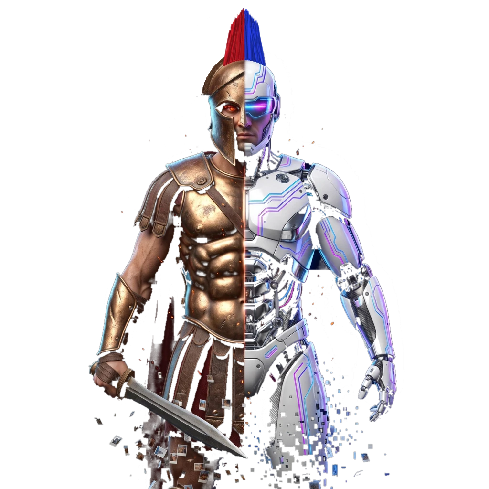

Získejte náskok. Ovládněte realitní trh.
AI Bot Ares spojuje umělou inteligenci a armádu autonomních robotů v jednom nástroji pro přípravu a správu realitních projektů. Během pár minut vám připraví celou zakázku k prezentaci. Od prvních fotek po hotovou nabídku. Vše na jednom místě.
Vstoupit →